Preservativas
Uso de especies nativas para sostener la fauna local (aves, mariposas, polinizadores).
Guía de estudio · Módulo I
Los cuatro bloques que sientan la base conceptual de todo el curso: qué entendemos por paisajismo, qué funciones cumple, qué calidades debe reunir, y cómo se organiza un proyecto de principio a fin.
Antes de definir paisajismo hay que entender qué es un paisaje: un espacio de terreno que se abarca de un vistazo, o su representación (una pintura, un dibujo). Un paisaje puede ser urbano, rural, natural o modificado — no tiene que ser necesariamente lindo. Un descampado también es un paisaje.
Con esa base, la definición de trabajo del curso es: el paisajismo es el arte de recrear la vegetación en los espacios de convivencia de la sociedad, reacercando al hombre de su elemento de origen: la Naturaleza.
Antiguamente se pensaba que el paisajismo era solamente usar plantas como adorno. Hoy la profesión combina criterios técnicos (suelo, clima, distancias de plantación) con conceptos artísticos. Plantas no es igual a paisajismo: los recursos vegetales son la parte más vistosa, pero necesitan de los recursos arquitectónicos (caminos, solados, pérgolas, fuentes) y de los recursos técnicos (distancias de plantación, tutoramiento, tamaño adulto de la planta, clima, tipo de suelo, asoleamiento).
«El jardín tiene vida: nace, crece, puede estar sano o enfermo, sus partes mueren y se renuevan. Si queremos perfección, busquemos un escenario, no un jardín.»
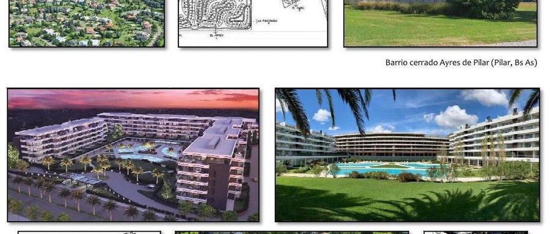
Distinción central del módulo:
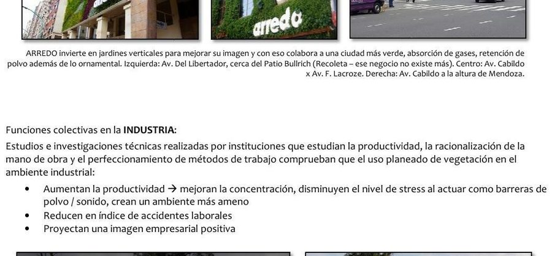
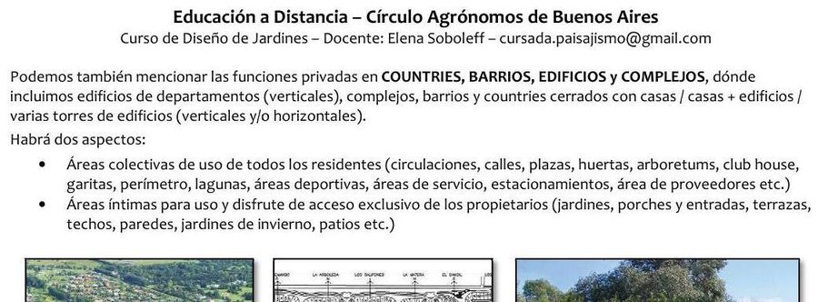
El curso se enfoca en las funciones privadas, específicamente en jardines residenciales — el tipo de proyecto en el que estás trabajando ahora.
Dentro de lo residencial, el diseño debe resolver:
Nota de campo: estas funciones ya están presentes en tu proyecto actual: el área de descanso, el chulengo y el camino hacia la casa son respuestas concretas a estas funciones privadas.
Seis atributos que debería tener un paisajismo bien resuelto:
Preservativas
Uso de especies nativas para sostener la fauna local (aves, mariposas, polinizadores).
Atenuantes
La vegetación baja temperaturas, reduce ruido, frena viento y polvo, ahorra energía de climatización.
Decorativas
La más conocida, pero debe ir siempre subordinada a las demás — sin ellas, se pierde la función real de mejorar la calidad de vida.
Estructurales
La vegetación organiza el espacio: cercos vivos, macizos (grupos densos de una misma especie), contención de taludes.
Recreativas
Habilita el uso del espacio para ocio y descanso.
Lucrativas
La rentabilidad: plusvalía para la propiedad del cliente y rédito profesional para el paisajista.
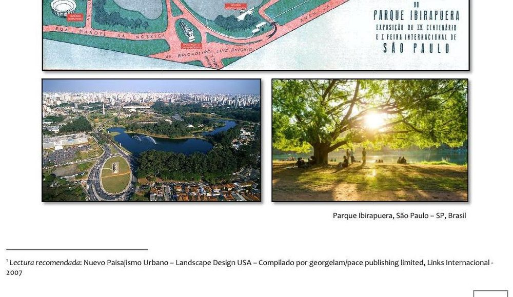
Es la hoja de ruta de todo proyecto — y del tuyo en particular. El módulo da la lista completa, pero este es el set mínimo indispensable que no puede faltar ni en el jardín propio:
Dato práctico de campo: la etapa de anteproyecto → presentación → correcciones es la que más tiempo consume cuando la entrevista inicial fue floja. Cuanto mejor se releven los deseos y restricciones del cliente al principio, menos vueltas se dan después.
Guía de estudio · Módulo II
Antes de diseñar hay que levantar los datos del terreno con método: qué medir, qué fotografiar, cómo pasar todo eso a un plano en escala, y qué herramientas usar para dibujarlo.
El relevamiento es la etapa donde recopilamos toda la información necesaria del espacio antes de diseñar. El módulo distingue dos etapas, que conviene no mezclar:
Toda la información relevada se traslada después a un plano en escala — la base sobre la que vamos a diseñar. Si no existe un plano previo, se arranca con un croquis a mano.
Nota de campo: siempre olvidamos algo. Por eso conviene planificar bien esta etapa y documentar de más — con fotos y videos — en vez de confiar solo en la memoria.
El relevamiento técnico del espacio a intervenir cubre:
Un criterio importante para diseñar con responsabilidad: siempre hay que usar las medidas finales esperadas de las plantas adultas, no su tamaño al momento de plantar. Un árbol que hoy es chico va a crecer, y las reglamentaciones de distancia a medianeras (por ejemplo, 3m) aplican en función de ese tamaño adulto.
Ejemplo del módulo: en un jardín de 4,33m de ancho no entra un árbol plantado en tierra si la normativa exige 3m de distancia a la medianera — pero sí puede ir en un macetón bien preparado.
La recomendación del módulo es simple: nunca sacamos suficientes fotos. Conviene registrar, como mínimo:
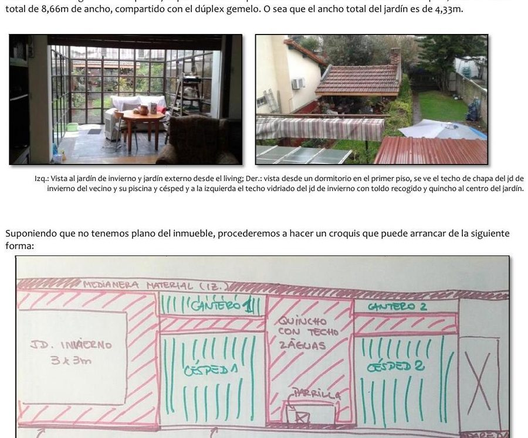
Un truco útil cuando falta una medida: usar elementos de tamaño conocido que aparecen en las fotos como referencia de escala.
Medidas de referencia (Buenos Aires): los baldosones de vereda miden 60×40cm (también hay de 30×40cm); las baldosas tipo "vainilla" miden 20×20cm; los ladrillos comunes miden entre 23–25cm de largo por 12–13cm de ancho. Con esto se puede estimar una medida aproximada a partir de una foto — unos pocos centímetros de diferencia no arruinan el diseño con plantas, aunque sí importan si hay que encargar un mueble a medida.
Antes de ir a relevar conviene estudiar el entorno desde el escritorio:
Una vez en el sitio, hay que sumar la mirada sobre el paisaje vecino:
Cuando una copa de árbol, una cortina de viento o una enredadera del vecino se suma visualmente al propio jardín como si fuera parte del diseño, se habla de paisaje prestado: un recurso que agranda el espacio percibido sin ocupar terreno propio.
Toda la información relevada se pasa a un plano dibujado en escala: una proporción fija entre las medidas del dibujo y las medidas reales del terreno.
Cómo leer una escala: 1:100 significa que 1 metro real se representa con 1 centímetro de dibujo (1 dividido 100 = 0,01m = 1cm). En escala 1:50, 1 metro real son 2cm de dibujo (1 dividido 50 = 0,02m). Cuanto más chico el divisor, más grande y detallado sale el plano.
La elección de escala y papel es un poco de prueba y error:
El dibujo técnico se hace primero a lápiz, para poder corregir. Solo un plano ya revisado y aprobado pasa a tinta en sus líneas permanentes (perímetro, construcciones, plantas que se mantienen).
Elementos básicos para dibujar el plano base:
Saber leer un plano de situación ya dibujado es igual de importante que saber dibujarlo. Un plano se lee dividiéndolo en zonas — por ejemplo, entrada, construcción y jardín — identificando paredes y aberturas por su representación gráfica estándar.
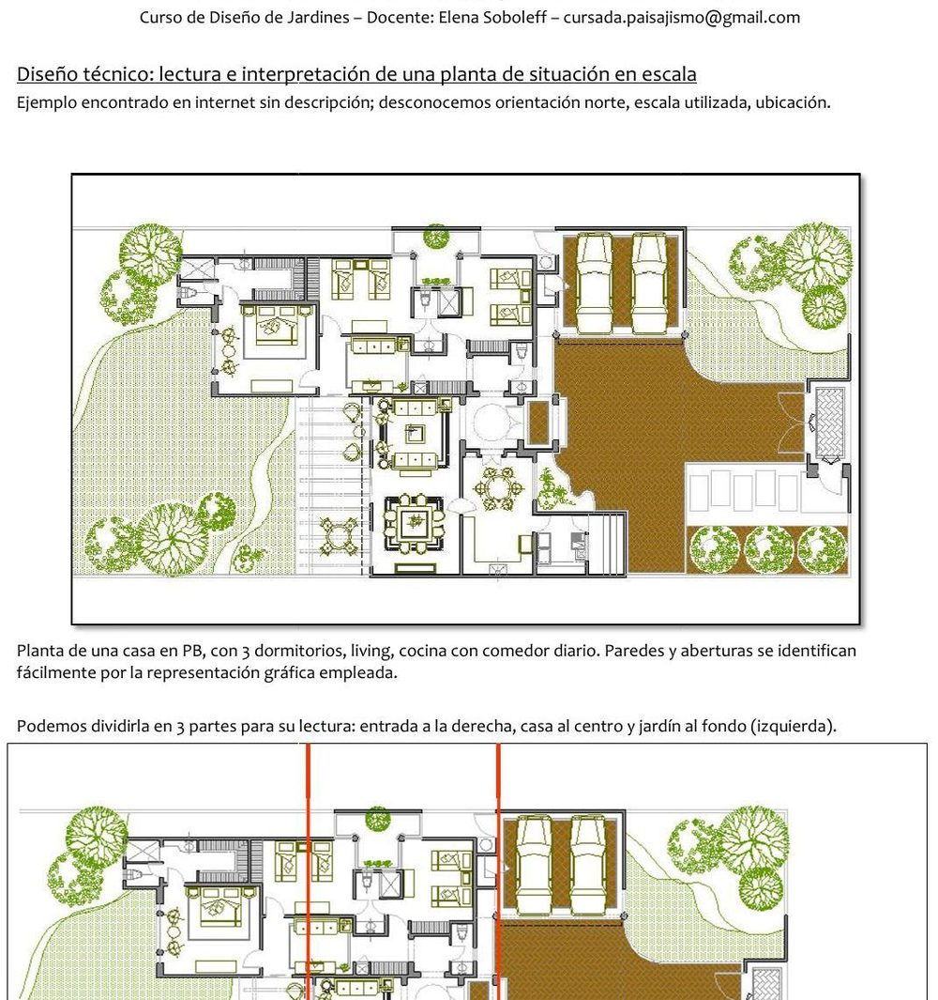
Guía de estudio · Módulo III
Un buen diseño combina dos miradas: el estudio técnico y crítico del espacio a intervenir, y una buena comunicación con quienes van a vivir el jardín. Este módulo recorre ambas — desde el asoleamiento y el suelo hasta la entrevista con el cliente y el mantenimiento futuro.
Diseñar un jardín de estilo japonés porque el dueño es de origen oriental puede no ser la solución que esa persona busca. La comunicación con el usuario es tan fundamental como la técnica para lograr un resultado que agrade y perdure en el tiempo.
Los jardines son organismos vivos: nacen, crecen, llegan a un auge y decaen. También es normal que sus usuarios los amolden con el uso, como quien ablanda un zapato lindo hasta que se hace cómodo. Por eso hay que diseñarlos de forma que permitan esas adaptaciones sin que representen cambios drásticos que desfiguren el diseño por no haber tenido en cuenta alguna necesidad o gusto.
Para lograrlo, el módulo propone dos etapas:
Nota de campo: debemos ser observadores y saber preguntar — las dos habilidades que sostienen todo este módulo.
Cuando llegamos a un lugar desconocido, observamos — muchas veces de forma inconsciente. Al llegar a un jardín en el que vamos a trabajar hay que observar de forma consciente y crítica: ese análisis del contexto es el punto de partida del diseño. Cada lugar tiene un "alma", características que lo definen: no es lo mismo un jardín urbano rodeado de medianeras altas que uno en un pueblo de campo con cercos vivos, o uno con vista a una laguna.
Conviene levantar algunos datos antes de la primera visita: en Google Maps, vista satelital, ya se puede identificar arbolado en las calles, pulmones de manzana, piscinas, el ancho de las calles. Otra opción es llegar antes de tiempo y dar una vuelta por el barrio, observando qué está plantado en otros jardines, qué funciona y qué no — inspirar el espíritu del lugar.
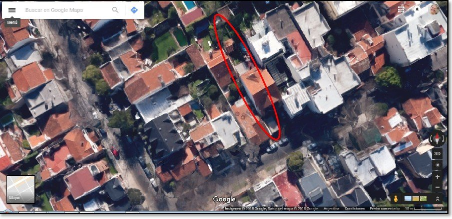
Esa observación genera sentimientos: algunos que vale la pena reforzar (pájaros, brisa de verano, el cielo entre los edificios) y otros que vamos a querer minimizar. Es decir, aspectos positivos y negativos — fortalezas y debilidades — que conviene listar para luego sacarles provecho o disimularlos con el diseño, identificando además si están a nivel ojo o a nivel cielo, y si caen dentro o fuera de los límites del terreno.
Ejemplos de fortalezas: vistas a río, lago o montañas; árboles en el horizonte; la floración de una enredadera vecina; plantas añejas en buen estado; el perfume de una flor que no sabemos bien de dónde viene. Ejemplos de debilidades: ventanas vecinas invasoras, torres de agua o de celular, ruidos, polvo, equipos de aire acondicionado o de piscina a la vista.
Como mínimo, hay que considerar estas variables o factores condicionantes para elaborar el diseño: asoleamiento, clima, topografía, límites espaciales, leyes y reglamentos, estilo arquitectónico y regional, y los puntos focales que representan un problema. Clasificadas según el tipo de limitación que imponen:
Legales
Leyes y reglamentos municipales: distancia de plantación a medianeras, especies prohibidas, obligación de esconder tendederos, uso de cercos vivos en vez de muros, área permeable mínima, pulmón de manzana.
Visuales
Elementos estéticamente indeseables, dentro o fuera del jardín: torres de agua, equipos de piscina, cualquier cosa que no se pueda retirar ni mejorar.
Físicas
Barreras visibles o no: bajo tierra, cañerías, desagües, cimientos, cableado, gas; en superficie, construcciones e instalaciones que no se pueden mover.
Geográficas
Latitud, longitud y altura sobre el nivel del mar definen el clima: asoleamiento, régimen de lluvias, vientos y tipo de suelo del lugar.
Arquitectónicas y regionales
El estilo del jardín suele acompañar el de la construcción, aunque en casos puntuales se busca el contraste — frecuente en museos y espacios de exposición.
Constructivas
El peso máximo que soporta una terraza, azotea o balcón: hasta 500 kg/m² en azoteas, 200 kg/m² en balcones en voladizo (macetas, tierra, drenaje, agua, plantas, mobiliario y personas incluidos).
Fuente del dato: Revista Jardín n.º 58, edición especial mayo 2020 — "Diseñá tu jardín".
Identificado el norte geográfico se puede establecer el naciente (leste, a la derecha de quien mira hacia el norte) y el poniente. La ruta del sol es un arco ascendente de leste a oeste, más inclinado hacia el sur en invierno. Este análisis permite elegir las especies vegetales según su necesidad lumínica para la fotosíntesis.
(Tomando como referencia fin de primavera a inicio de otoño.)
Nota de campo: invierno es la época menos favorable de cualquier jardín — pero también el mejor momento para estudiar sus sombras. Los sectores con sol todo el día en invierno también lo tendrán en verano; al llegar la primavera esos sectores se extienden, y se mantienen así hasta mediados de otoño.
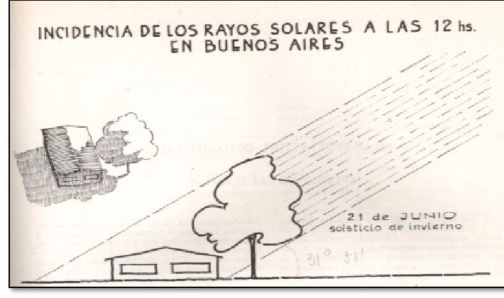
| Orientación | Sol | Mejor época |
|---|---|---|
| N | Todo el año, con horas centrales fuertes en verano | Todo el año |
| NE | Todo el día en invierno; de la mañana al mediodía el resto del año | Todo el año |
| E | De la mañana | Todo el año |
| SE | De la mañana, salvo en invierno | Primavera / verano / otoño |
| S | Casi sin sol; solo primeras y últimas horas en verano | Verano |
| SO | De la tarde, salvo en invierno | Primavera / verano / otoño |
| O | De la tarde | Todo el año |
| NO | Todo el día en invierno; de la tarde el resto del año | Todo el año |
Hemisferio sur (referencia Buenos Aires — atención con bibliografía europea, que ubica la primavera en marzo): Primavera = equinoccio 23 de septiembre · Otoño = equinoccio 20 de marzo · Invierno = solsticio 21 de junio, máximo desplazamiento norte · Verano = solsticio 21 de diciembre, máximo desplazamiento sur.
Del clima conviene registrar:
Estos datos influyen directamente en la necesidad de sombra, en la construcción de barreras de viento, polvo o sonido, y en la elección de especies.
La topografía — los desniveles del terreno — influye en el drenaje, creando zonas de distinta humedad: inundables o áridas. También es un recurso de diseño: alterar un nivel puede generar interés en un área monótona, como interrumpir la continuidad visual del horizonte en un campo llano.
Los límites espaciales hay que conocerlos antes de ubicar cualquier especie: ancho, largo, altura y profundidad de suelo disponibles. La vegetación es un elemento vivo de desarrollo dinámico — no calcular bien estos límites genera problemas visuales y de uso, además de accidentes y daños a la propiedad propia o vecina.
El estilo regional de cada comunidad está determinado por sus orígenes culturales: crear un paisajismo árido en medio de un área de conservación de bosque o selva misionera, por ejemplo, puede resultar un fuerte contraste incómodo para quien habita el lugar.
El suelo está formado por partículas minerales (arena, limo, arcilla), aire, agua y materia orgánica. Según el tamaño de esas partículas hay más o menos presencia de oxígeno y agua, lo que determina qué organismos pueden habitarlo. En paisajismo se habla de sustratos: suelos preparados a medida de una especie, como uno ácido para plantas de interior o uno arenoso para cactus.
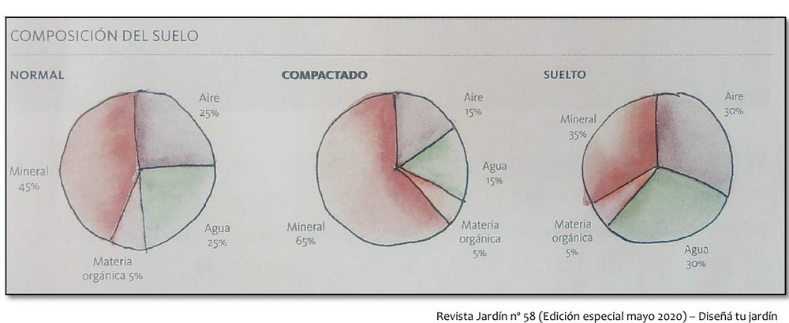
La acidez se mide en pH, de 1 (acidez extrema) a 14 (máxima alcalinidad), con el 7 como neutro. Entre 6 y 7,5 es el rango ideal para la mayoría de las plantas, porque en ese pH se disuelve el fósforo permitiendo su absorción por las raíces — junto con el nitrógeno y el potasio, los tres macronutrientes. El pH de Buenos Aires ronda entre 6 y 8, con zonas más ácidas junto a los ríos.
Nota de campo: los suelos encharcados sirven para plantas palustres, pero son perjudiciales para cactus y suculentas — favorecen la pudrición de raíces. Conviene detectar zonas anegadizas y corregirlas con canales de drenaje, pozos o rejillas conectadas a caños pluviales.
Para complementar el relevamiento técnico hace falta coordinar una entrevista personal con quienes van a usar el espacio — en lo posible, en el propio lugar. Es el momento de escuchar e interpretar al usuario, respetar el lugar existente, conservar e incorporar las especies valiosas, equilibrar lo estético con lo práctico, vincular el adentro con el afuera y valorar las especies nativas que suman al corredor ecológico del barrio.
En esa entrevista conviene relevar:
El diseño también debe anticipar su propio mantenimiento:
Dato práctico de campo: un césped de golf se poda todos los días; una alfombra de césped en casa necesita poda semanal en primavera-verano. Es responsabilidad del diseño elegir con conciencia las especies según el mantenimiento real que ese jardín va a recibir.
Guía de estudio · Módulo IV
No hay un solo punto de partida al diseñar un jardín: puede ser un color, una vista, una planta que se queda, una actividad deseada o una limitación legal. Este módulo reúne las herramientas de composición que ordenan ese proceso — del trazado de circulaciones al uso del color.
Observar, caminar, mirar libros e imaginar el uso del espacio son las herramientas de inspiración. Respetando las variables técnicas ya vistas, una buena forma de empezar es estudiar los sectores del jardín y pensar dónde conviene ubicar cada elemento — sobre todo los que necesitan condiciones especiales, como una huerta que pide al menos 6 horas de sol diarias, o una piscina a la que no queremos que le caiga la sombra justo en su horario de mayor uso.
Teniendo en cuenta las actividades a desarrollar se definen los sectores:
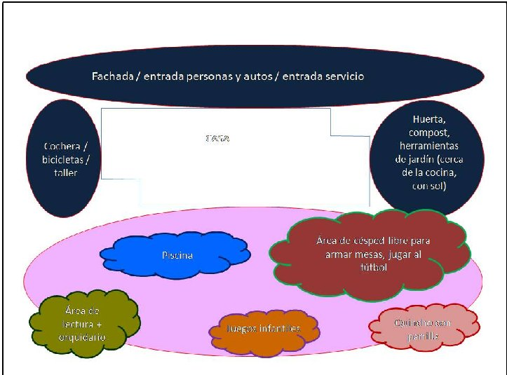
Definidos los sectores hay que jerarquizarlos: decidir cuáles tienen más relevancia y por lo tanto recibirán un tratamiento diferenciado — plantas más desarrolladas para llegar a resultados rápidos, materiales más nobles. También puede significar resignar algún deseo para poder cumplir otro más importante.
Después viene la circulación: ¿construyo caminos? ¿Cómo circulo los días de lluvia? ¿Hacen falta techos y abrigos? ¿Y el drenaje? Se marcan los recorridos desde la entrada de autos y peatonal hacia la cochera, desde la casa a los sectores externos, y entre esos sectores.
El fondo es el soporte; sobre este va la figura. Es una definición prestada de la pintura, muy explorada en publicidad y fotografía. El fondo puede ser simple (monocromático) o complejo (policromático) — una página en blanco con un logo, frente a una foto del Caribe con el texto de una agencia de viajes encima. Lo mismo vale para la figura.
¿Cómo funciona esto en un jardín? En un paisaje rural el fondo puede ser una plantación de pinos o el pasto con el ganado; en una ciudad, los edificios o los árboles del jardín vecino. Hay que decidir si nuestro jardín se destacará sobre ese fondo, se mezclará con él, o si trataremos de disimularlo.
Si el jardín vecino tiene muchos liquidámbar, sabemos que el fondo será verde en primavera y verano, rojizo en otoño y vacío en invierno — dando lugar a otro fondo distinto: el cielo y las construcciones detrás de esas copas.
En cada división del área existirán siempre uno o más puntos de atracción visual que deben recibir tratamiento adecuado y destaque en la composición. Son aspectos positivos, potencialidades: la vista desde una ventana o una puerta, desde el banco donde nos sentamos a leer y tomar mate, el sol naciente, el horizonte del río.
También hay puntos focales negativos — debilidades que trataremos de disimular. Un foco de atracción llamativo funciona bien como recurso para desviar la atención de un componente desagradable: una construcción fea, tanques de agua, torres de celular, publicidad. Se puede combinar una barrera vegetal que tape el elemento con algo de fuerte atracción visual a la altura de la vista.
Dato de composición: lo que más nos llama la atención está a altura de ojo. El ser humano mira normalmente en un ángulo de 60 grados con los ojos como eje central — 30 grados hacia arriba y 30 hacia abajo. En ese ángulo conviene crear los puntos de interés focal que funcionen como imanes.
Sirven como puntos focales: plantas, iluminación, fuego, agua, movimiento, elementos escultóricos, líneas geométricas, color, vistas, la posibilidad de sentarse a disfrutar del espacio, curvas que generan curiosidad y desniveles.
La trama dirige el diseño: es la "ley" organizadora del espacio. La más conocida es la cuadrícula. Se pueden crear células-base a partir de las formas simples — cuadrado, triángulo equilátero, hexágono regular y círculo — y repetirlas para generar la trama que orientará el diseño.
Muchas veces las tramas surgen de formas o módulos que ya existen en la arquitectura del lugar: las medidas de ventanas y puertas, el espaciamiento entre columnas, o las baldosas.
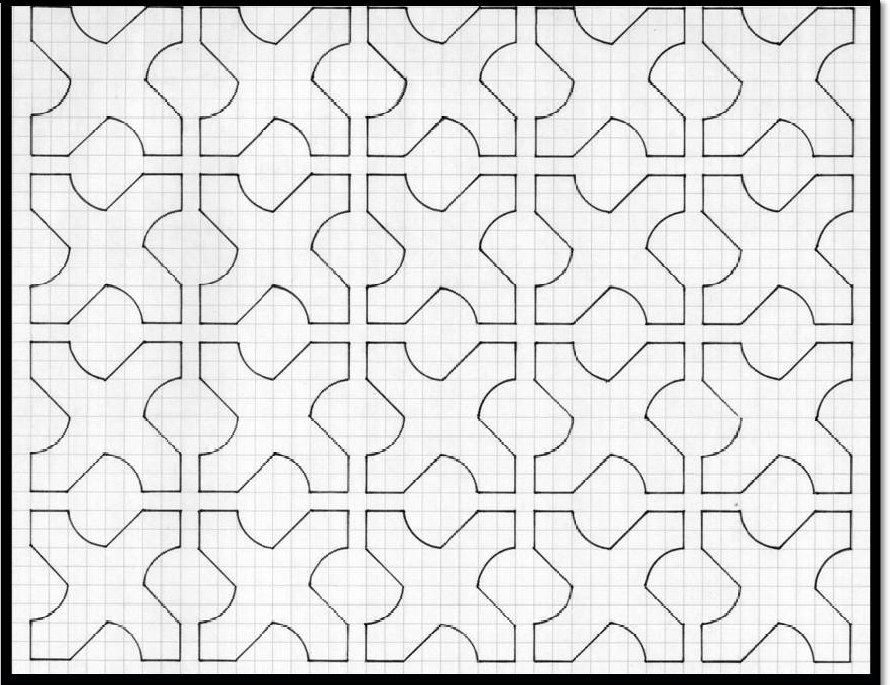
La trama da estructura y ayuda a definir el estilo: el diseño geométrico usa más la cuadrícula, el triángulo y los círculos claramente definidos; el diseño orgánico es más libre, lleno de curvas y sin rectas — algo que no existe en la naturaleza.
Las líneas de composición determinan el carácter del diseño:
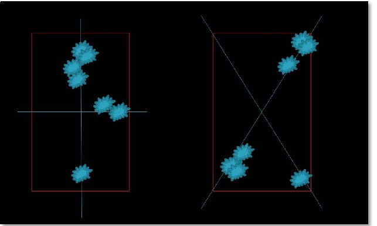
El ojo lee el lado derecho y el derecho inferior como más fuertes: en nuestra cultura, que lee de izquierda a derecha, ahí es donde hay más tensión visual. Por eso los cuadros suelen firmarse abajo a la derecha, para no interferir con la composición sin perderse en ella.
Sobre la escala humana: el ser humano necesita contención. Muchas veces elegimos sentarnos a una mesa con sombrilla aunque después corramos las sillas para estar al sol — la sombrilla nos da un techo. En el jardín podemos pensar las plantas altas como paredes, las pérgolas y copas de árboles como techo, y los cubresuelos como solado.
Las estructuras monumentales demuestran lo chico que es el ser humano frente a la ley (la Facultad de Derecho de la UBA) o frente a Dios (Notre Dame): imponen respeto, fuerza y poder, posiblemente miedo y sumisión. Con estructuras más acordes a la altura del hombre se obtienen resultados más acogedores.
El ejemplo del módulo es el Parque Hitachi Seaside Park, en Hitachinaka, Japón: lograron generar un parque con interés de visitación constante empleando especies de gran impacto visual, cada una en su momento de gloria, en la época del año que le toca ser reina.
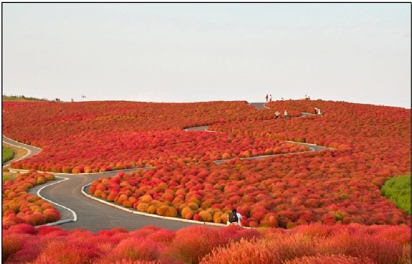
Generar interés de día y de noche, en primavera, verano, otoño e invierno es una tarea difícil pero no imposible. En Hitachi lo resuelven iluminando las kochias con luces LED en eventos nocturnos, y rotando narcisos, tulipanes, nemophila y rosales a lo largo del año.
Recurso aplicable: otra forma de generar interés durante todo el año es sacar provecho de los cambios de las especies caducas en cada estación — floración, color otoñal, ramas desnudas en invierno.
Un jardín debe estimular todos los sentidos: color, sonido (aves, viento), aromas, sabores y texturas. También la permeabilidad de la luz en plantas de distinta densidad confiere sensaciones distintas y crea movimiento de luces.
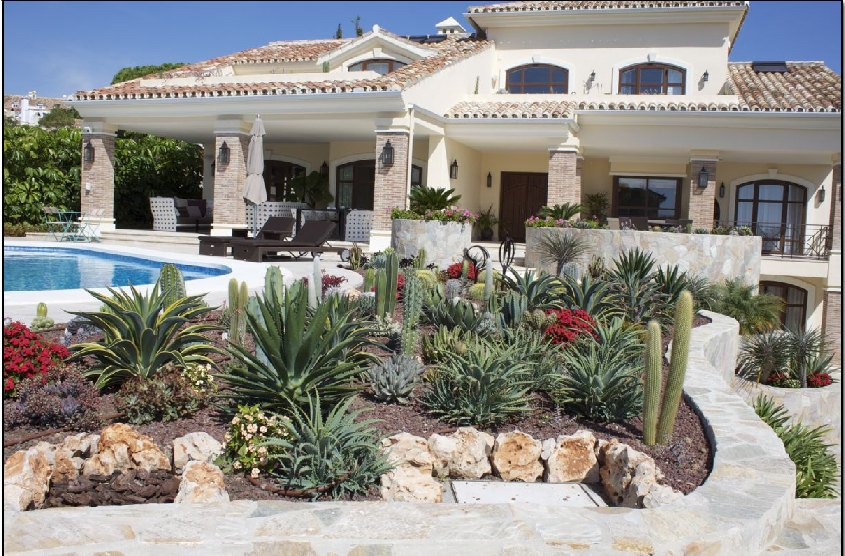
Uno de los aspectos más importantes para llegar a una composición armoniosa es el uso equilibrado del color. Para ayudarse conviene recurrir al disco cromático: usar primarios descompuestos gradualmente en matices, trabajar los complementarios y los secundarios, o decidirse por fuertes contrastes llamativos.
Las cuatro características del color son la temperatura (frío o cálido), el valor (más o menos blanco/negro, la luminosidad que se nota al ver una imagen en blanco y negro), la saturación (saturado = puro, desaturado = mezclado) y el matiz (el pigmento propiamente dicho).
| Grupo | Colores | Sensación que transmiten |
|---|---|---|
| Livianos | Azul, verde, amarillo verdoso | Paz y tranquilidad; son sedantes |
| Pesados | Morado, púrpura, rojo, naranja, amarillo | Crean límites por concentración visual; seguridad y firmeza |
| Activos | Rojo y sus matices | Predominan como puntos focales; efecto excitante |
| Ligeros | Amarillo al naranja | Liviandad e hiperactividad visual; pueden ser irritantes |
| Cálidos | Rojo al naranja | Sensación de calor, seguridad y firmeza |
| Fríos | Verde al azul | Tranquilizantes y luminosos; frescor y protección |
| Íntimos | Amarillo verdoso al verde | Acogedores, crean intimidad |
| Pasivos | Verde al azul | Calma e intimidad, acogiendo pasivamente |
| Oscuros | Rojo, púrpura, violeta, morado, azul y verde oscuro | Serenidad y distinción; si predominan, causan depresión |
| Claros | Naranja claro, amarillo, amarillo verdoso, lila claro | Crean límites por concentración visual; seguridad y firmeza |
Fenología = época de floración. Conviene estudiarla especie por especie, y considerar además los colores otoñales, de hojas, cortezas y frutos. Puede ser útil dibujar dos planos — uno de otoño/invierno y otro de primavera/verano — para entender el comportamiento cromático del jardín a lo largo del tiempo.
Guía de estudio · Módulo V
El proceso de diseño lleva tiempo. Plasmar ideas en un plano permite probar soluciones hasta llegar a una que funcione desde la circulación, la funcionalidad, lo ornamental y lo técnico — y después hay que saber comunicarla.
Un jardín equilibrado y bien proporcionado invita a permanecer en él, a vivirlo y descubrirlo. Los dos errores opuestos que lo impiden son:
Un espacio bien diseñado encuentra el equilibrio entre llenos y vacíos: entre sectores poblados por plantas y espacios de estar, caminos y estructuras. Recorrer un jardín y descubrir sus encantos es un gran placer — el diseño debe contemplar esas sorpresas.
La excepción difícil de lograr son los jardines de estilo inglés: compuestos de una gran variedad de especies, texturas y colores, pero que a la vez logran equilibrio y armonía.
En los jardines geométricos identificamos líneas, círculos, rectángulos, diagonales, espacios marcados. Son más duros, parecen más limpios y ordenados.
Los jardines orgánicos desdibujan: son libres, sueltos. En la naturaleza las líneas perfectamente rectas no existen. Los espacios redondeados y las curvas concéntricas son más acogedores y cálidos.
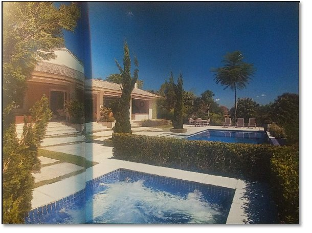
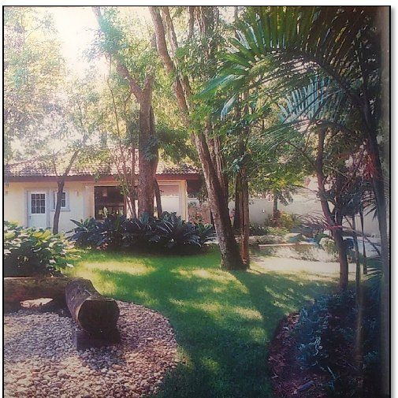
Cómo se arranca: inspirándose en alguna característica del espacio se elige una trama que oriente el diseño. Con esa trama, y teniendo en cuenta la sectorización según las áreas de estar y el asoleamiento, se diseñan canteros y se ubican árboles y estructuras — siempre respetando el tamaño final que cada planta va a adquirir, o el tamaño que nos comprometemos a mantener con podas.
El jardín es un espacio perfecto para estimular todos los sentidos — la visión es apenas una pequeña parte de lo que podemos trabajar.
Sonido
Agua en movimiento (fuentes, cascadas, chorros), peces y ranas que saltan, canto de pájaros, y elementos que suenan con el viento como caireles o las flautas gigantes del Paseo del Viento en Vicente López.
Tacto
Distintos solados — césped, piedras, hojarasca, arena — que se sienten diferente aún con calzado y fortalecen ligamentos y equilibrio. Hojas aterciopeladas, pinches de rosales, troncos lisos y rugosos.
Temperatura
La transición entre un sector de sombra densa y fresca y el rayo del sol se siente en la piel; encontrar un lugar agradable al sol en invierno es parte del diseño.
Aroma y paladar
Es fácil incorporar plantas aromáticas y comestibles sin necesariamente incluir una huerta en el diseño.
Movimiento
El viento hace bailar los penachos de las gramíneas —doradas al atardecer— y mueve las copas de los árboles en una tormenta. Mariposas, aves y pequeños reptiles aportan vida.
Un desafío
Crear un jardín sensitivo para no videntes o personas con otro tipo de deficiencia puede ser un lindo desafío y un gran descubrimiento para uno mismo.
Cuidado con las irregularidades del piso: deben ser perceptibles — los pozos invisibles causan accidentes.
Cuando pensamos en un jardín pensamos automáticamente en plantas, pero no son lo único. Los materiales extra-vegetales (o recursos arquitectónicos) son los que delimitan, crean caminos, canteros, estructuras y puntos de interés: esculturas, elementos decorativos, iluminación. Deben elegirse cuidadosamente como parte del diseño — si no, corremos el riesgo de que no armonicen con la arquitectura, con la decoración interior ni con el jardín mismo.
Los materiales otorgan identidad. Al repetirlos —y también a ciertas especies— en distintos sectores creamos unidad. Si en la entrada hay un camino de durmientes de quebracho bordeado de hortensias, y en el fondo un cantero de hortensias delimitado con durmientes y bancos del mismo material, sentimos que estamos en el mismo jardín: hay continuidad.
Siempre que sea posible conviene usar materiales propios de la región — una forma de valorar la cultura local y de bajar costos — además de reaprovechar materiales e incorporar elementos reciclados.
Para estructurar las áreas secas se puede recurrir a:
Los recursos vegetales se eligen con criterios ornamentales, funcionales y técnicos: respetando los requerimientos de sol, agua, humedad, protección al viento y tipo de suelo de cada especie, y también su tipo de desarrollo. No pongamos un roble en un jardín de 3×3m.
| Grupo | Qué son y qué hay que mirar |
|---|---|
| Árboles | El techo del jardín. Hay que estudiar altura y diámetro finales, desarrollo radicular, tipo de copa y fortaleza de la madera. Son los que más daño pueden ocasionar: el grupo que más atención merece. |
| Arbustos | Leñosas de varios troncos desde el suelo, de 0,5m a 7m o más. Muy plásticos, aceptan bien la poda — sirven para cercos vivos y topiarias. Algunos buscan agua y pueden romper cañerías. |
| Herbáceas | Sin lignina, de consistencia tierna; florecen mucho y crean volumen o tapizan. Anuales, bianuales o perennes (más de dos años). |
| Enredaderas y trepadoras | Tallos largos y flexibles con órganos para sujetarse; necesitan estructuras y soportes. Se suman aquí los arbustos apoyantes. |
| Cubresuelos | El piso del jardín: poca altura, tallos tiernos, crecimiento horizontal enraizando guías. |
| Céspedes | Cubresuelos pisoteables de la familia de las gramíneas, que podamos para mantenerlos a nuestro gusto. |
| Acuáticas y palustres | Requieren espacios diseñados para ellas y agua a su medida. |
| Epífitas | Pueden vivir sobre troncos secos o alambrados. |
Factores a tener en cuenta al elegir cada especie:
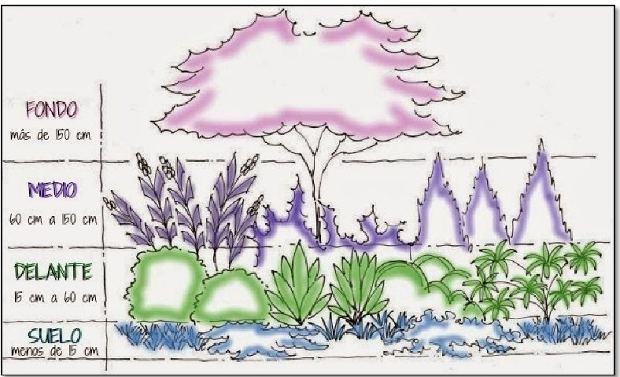
Si ese mismo conjunto se puede observar desde el lado opuesto, tendremos más bien una pared de 1,50m de altura: podemos optar por ese efecto, o volver a bajar las alturas formando una parábola.
Al elegir qué planta ocupará cada espacio hay que considerar su costo, su longevidad, y si se trata de una especie nativa que interactúa con la fauna local o de una exótica que puede volverse invasiva y representar un problema ecológico.
Dato del censo: el censo del arbolado urbano de 2011 de la Ciudad de Buenos Aires reveló que más del 45% de los árboles de vereda son fresnos. Es una exótica sin controladores naturales que empieza a comportarse como invasiva; si una plaga la atacara, la ciudad podría perder cerca del 25% de su arbolado lineal — la sombra de verano, el aire respirable, la retención de polvo y agua de lluvia.
El módulo trae listados de especies de fácil cultivo para el Gran Buenos Aires, con al menos tres nativas por categoría. Algunos ejemplos:
Dos especies que el módulo señala para conocer pero no usar: el Fresno americano (Fraxinus pennsylvanica), porque ya hay demasiados, y el Ligustrino (Ligustrum sinensis), exótico e invasivo.
Para aprovechar mejor el estudio de las plantas conviene elaborar fichas o listados con la información más relevante de cada especie:
Ojo con el comportamiento variable: una misma especie se comporta distinto según el espacio. Un ceibo que creció en medio de una isla del delta compitiendo por luz se hace alto y flaco; otro que creció en una plaza urbana con poca agua resulta más escultórico y retorcido.
Cuando el diseño es para un cliente —sobre todo si el proyecto es grande— se hace primero un anteproyecto, se presenta, se adapta según los comentarios recibidos, y así hasta llegar al proyecto final. Pueden hacer falta varias presentaciones. En el jardín propio se puede ir directo al proyecto, aunque conviene pedir opinión a los demás usuarios del espacio.
El anteproyecto se presenta personalmente; sus modificaciones pueden presentarse a distancia si nos damos cuenta de que el cliente sabe leer un plano.
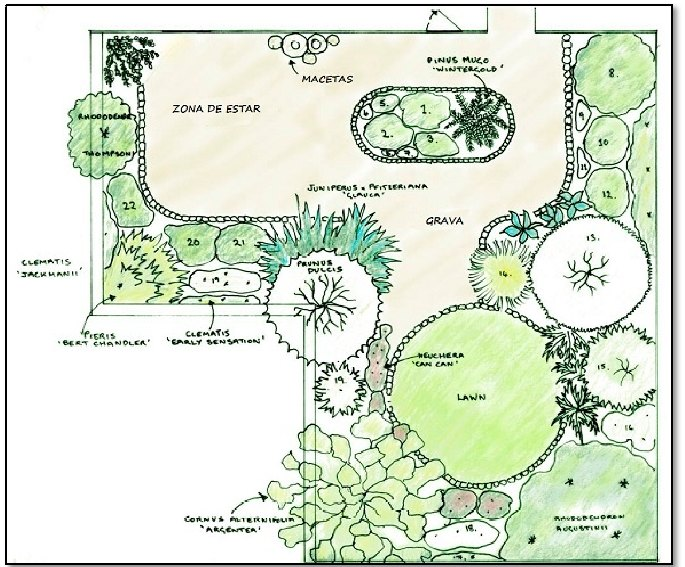
Materiales de presentación posibles:
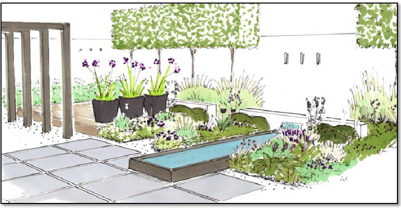
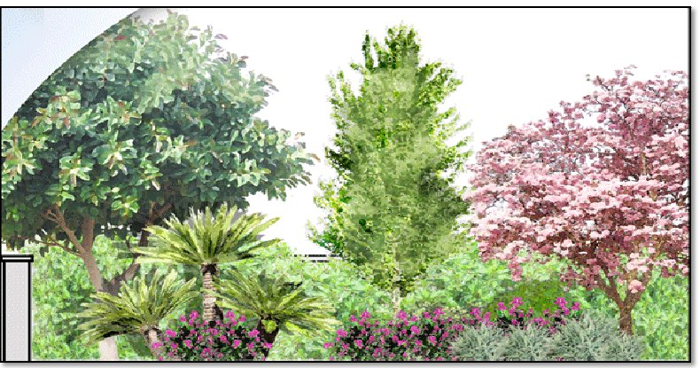
Recomendación: presentar el proyecto en el espacio donde será implantado, para poder caminarlo señalando sectores, alturas, volúmenes y espacios ocupados por estructuras.
El módulo analiza críticamente un plano de paisajismo real (Fig. 04). Lo que falta: no hay indicación del norte, ni sabemos el hemisferio o la latitud — por lo tanto no tenemos idea del asoleamiento. Tampoco está la leyenda o tabla de especies con códigos, simbología, género y especie, lo que impide imaginar alturas, floraciones, colores y mantenimiento.
Lo que sí se puede leer: se accede al jardín desde una puerta arriba a la derecha; el solado del pasillo se repite en el centro identificado como grava, lo que anticipa qué sentiremos al transitarlo y sugiere una zona permeable al agua. Al fondo, un imponente punto focal —el Cornus— invita a descubrir el jardín. No hay repetición de especies, lo que da un jardín muy variado que exige un diseño cuidadosamente pensado.
Truco de escala: una puerta al exterior mide al menos 80cm de ancho, normalmente 90cm. Con esa unidad de referencia se deduce que el círculo de césped del plano mide unos 4,5m de diámetro. Para dimensionar espacios, medí 5, 10, 15 o 20 metros lineales en una plaza o cancha formando un cuadrado, y analizá qué entra en esa área.
Los dos listados son parte fundamental del plano —pueden ir en la misma lámina o adjuntos— y evitan equivocaciones al momento de comprar:
Una imagen para pensar: en Japón, cuando hacen una plaza, primero plantan únicamente el césped. Dejan que la gente circule y marque sus caminos, sus rutas preferidas, sus atajos. Recién después crean el diseño — una buena manera de definir las circulaciones y sectorizar un espacio público.
Guía de estudio · Módulo VI
Cuando representamos un jardín en un plano lo importante es transmitir una idea, no ser realistas. El objetivo no es hacer una pintura: es que se identifiquen las masas de plantas, que se distingan las especies y se lea la diversidad.
Para diferenciar especies usamos distintas representaciones gráficas, además de espesores de línea y colores. Los grafismos ayudan a identificar el espacio final que ocuparán árboles, macizos y canteros, y facilitan la lectura entre caducas y perennes, latifoliadas y coníferas.
Se puede trabajar a color o en blanco y negro. Los grafismos para presentación al cliente serán más elaborados y detallados que los de un plano técnico — como el plano de plantación, el de riego, el de iluminación o el de drenajes y movimientos de tierra.
Criterio de escala: cada especie se representa con el tamaño en escala de su desarrollo adulto, o del tamaño total que queremos que ocupe si la vamos a mantener controlada con podas. Solo las plantas que admiten control por poda pueden dibujarse más chicas que su tamaño esperado — y siempre con sentido común: un ombú jamás entrará en un jardín de 6m² (salvo que nos gusten los bonsái). Recordemos que aunque podemos la parte aérea, el sistema radicular sigue creciendo y puede traer problemas futuros.
A veces caemos en la tentación de mostrar todos los colores y todas las floraciones en un solo plano. Eso es un error: las floraciones no ocurren todas simultáneamente, y mostrarlas juntas crea la ilusión de un jardín multicolor que nunca se hará realidad. Si el color es el hilo conductor del diseño, lo correcto es hacer como mínimo un plano por época del año — y aun así, no todas las flores de primavera tienen su auge a la vez.
Sobrecargar un plano de colores, aunque sean simultáneos, también dificulta su lectura y marea. Fotos que acompañen el plano expresan mejor el esplendor de las especies elegidas.
Un plano de presentación debe:
Un plano coloreado a mano es más cálido y transmite mejor la idea a un cliente sin tanto poder de abstracción.
Este plano lo interpretan profesionales del rubro, así que no necesita los adornos que ayudan a un cliente a entender la propuesta. Al ser un plano técnico debe:
Por qué se simplifica: en un plano de plantación no importa que todos los árboles se representen igual —un círculo con una X indicando el tronco— porque se diferencian por los códigos aclarados en la tabla. Se hace así porque estos planos traen otra información encima (distancias de plantación, cañerías, redes eléctricas enterradas, drenajes, instrucciones de plantación) y los grafismos complejos dificultarían su lectura.
Un grafismo no necesita ser realista: no buscamos identificar la especie mirando su símbolo. Para eso está la tabla de especies o la leyenda. De hecho, un mismo grafismo puede representar una especie arbórea en un proyecto y, alterando su escala, un arbusto o una herbácea en otro.
La regla es: un grafismo por especie, repetido cada vez que esa especie aparece en el proyecto. La excepción son los cubresuelos, que ocupan áreas extensas — ahí se usa un color o una textura para rellenar el área, y después se especifica cuántos plantines por metro cuadrado.
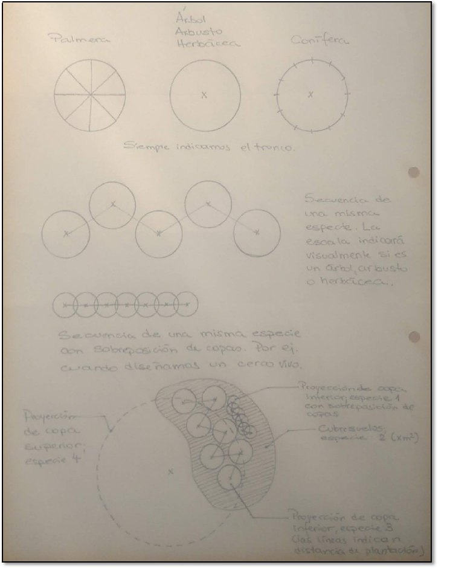
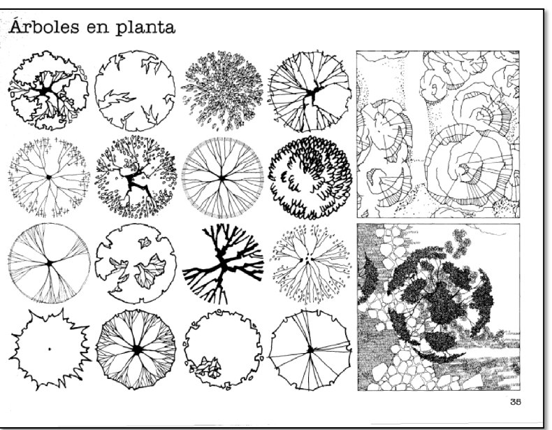
La convención general para diferenciar tipos de follaje:
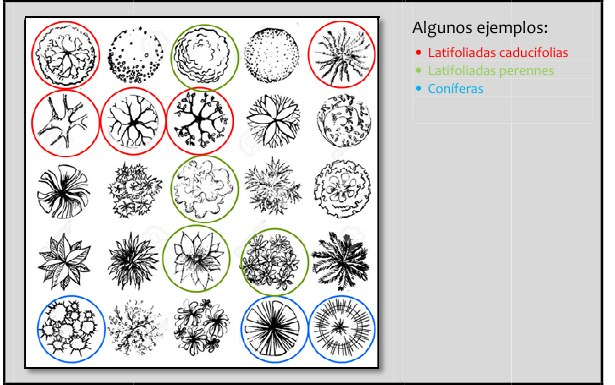
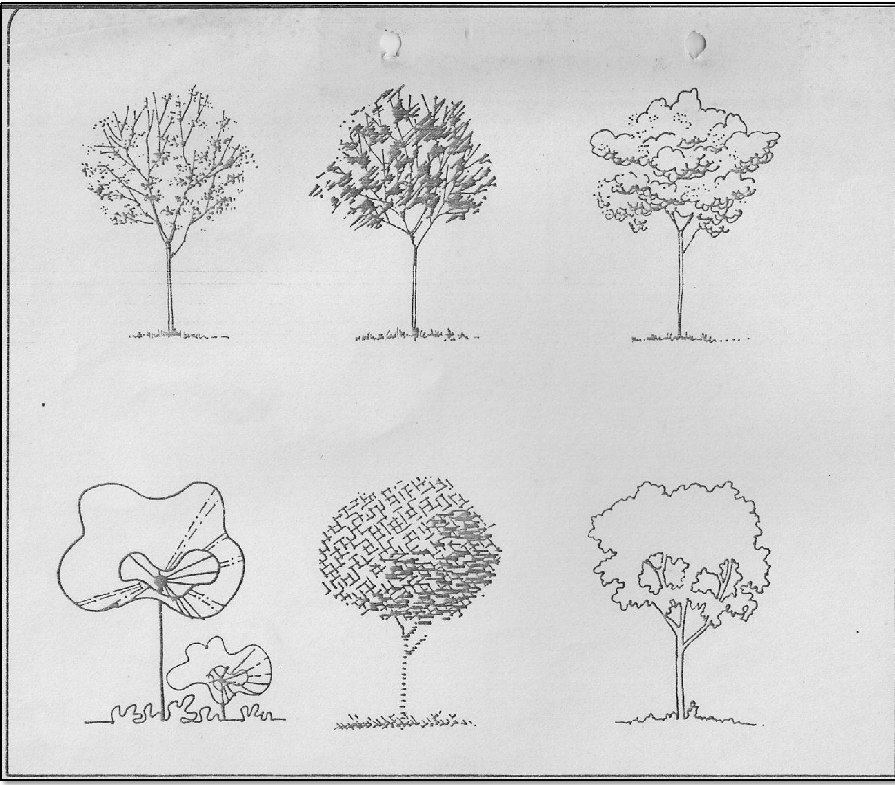
En arquitectura hay diversas convenciones para representar determinados elementos. No es necesario conocerlas todas, pero sí saber qué representan puertas y ventanas.
La clave para leerlos: los símbolos son mayormente cómo vemos los elementos desde arriba — su proyección. Una puerta, por ejemplo, se dibuja con el arco que describe su hoja al abrirse.
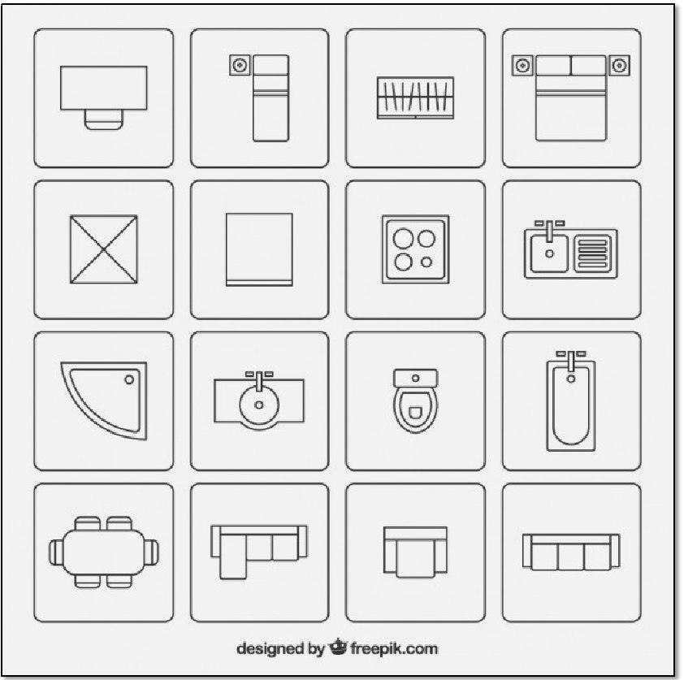
Un mismo diseño puede presentarse en blanco y negro o en color. El monocromático puede ser el indicado para un diseño minimalista y moderno; el coloreado es más amigable y transmite mejor la idea a quien no está acostumbrado a leer planos.
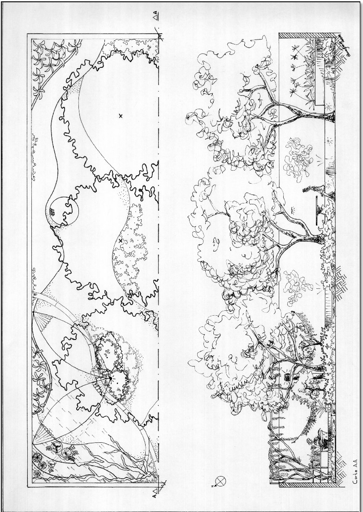
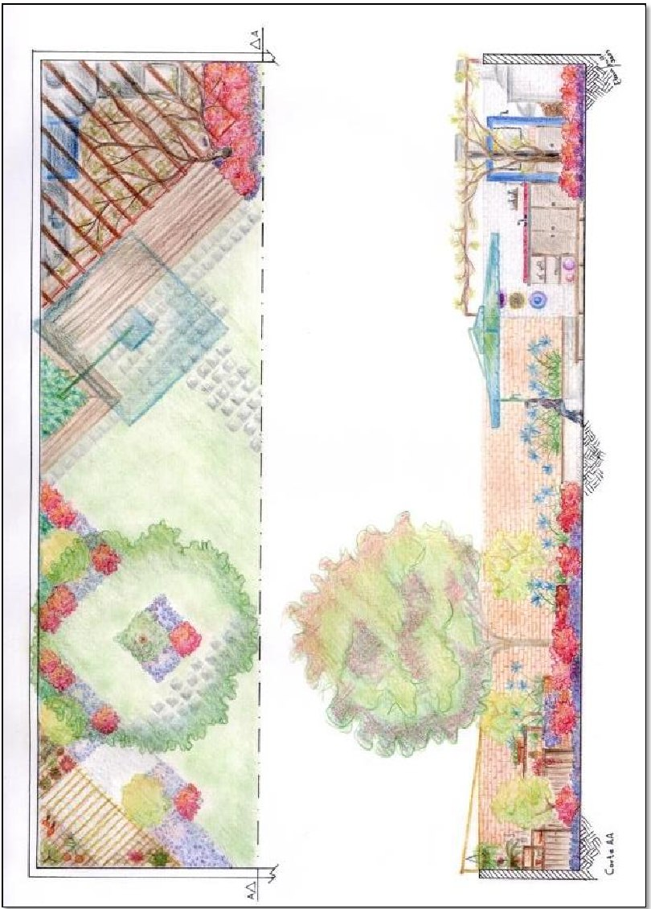
Datos mínimos de identificación que todo plano debe presentar:
Guía de estudio · Módulo VII
«¿Cuánto cuesta un jardín?» La respuesta de los paisajistas suele ser siempre la misma: depende. Este módulo desarma ese "depende" en una lista de costos concretos, y explica cómo cobrar el diseño y presupuestar la implantación.
Lo que más dificulta dar una respuesta es que el paisajismo es una obra de arte, y por eso es muy difícil determinar su valor. Depende del nombre que tenga el diseñador, de su experiencia, del estilo, de la sensibilidad artística. Y también de los materiales, del tamaño de las plantas, de la dificultad de acceso al lugar, del transporte, de los fletes y de la posibilidad de conseguir mano de obra especializada.
Para calcular el costo hay que tener en cuenta:
Dato de plazo: un jardín mediano a grande con árboles lleva entre 10 y 20 años en consolidarse. Ese es el horizonte real cuando se elige el tamaño de las plantas iniciales.
Hay aspectos que generalmente obviamos porque son indirectos, y que inciden en el tiempo que lleva el trabajo más que en la compra de cualquier ítem:
Por eso el costo de un jardín se divide en, como mínimo, dos partes:
Al total de los costos de implantación conviene agregar un porcentaje como margen de seguridad. Así se puede reponer una planta que se dañó en la obra o que no enraizó, absorber un leve aumento de precios, o reparar una cañería que rompimos al palear.
Regla del césped: conviene calcular un 10% más por los panes que se rompen durante la obra y por los recortes necesarios para ajustar al diseño de caminos y canteros — sobre todo si sus formas son orgánicas. Lo geométrico permite mejor armado y reaprovechamiento.
La ganancia es el total cobrado menos los costos directos e indirectos. Si todo sale como se planeó y no hizo falta usar el margen de seguridad, la ganancia será más alta — y corresponde compartir ese extra con los trabajadores: sin su profesionalismo y su falta de errores, eso no habría ocurrido.
Generalmente se calcula un 20 a 30% de ganancia sobre el total del costo para cerrar el presupuesto final que se envía al cliente.
Cuando un presupuesto de paisajismo pierde frente a otros únicamente por el precio —siempre que las demás ofertas se basen en los mismos parámetros de implantación— es mejor tomar esa derrota como victoria: alguien saldrá perjudicado por una propuesta engañosa.
Aunque tengamos poca o ninguna experiencia, aunque cobremos apenas lo suficiente para trasladarnos al espacio y pagar el estacionamiento del día de la entrevista, siempre hay que cobrar por el diseño. Diseñar lleva muchas horas, mucho estudio, mucho tiempo dedicado a observar, a buscar soluciones y a debatir internamente cuáles son las especies más indicadas.
Una vez aprobado el proyecto, el cliente dispone de una copia con los listados de plantas y materiales, indicaciones de plantación y descripciones. Con ese material puede contratarnos para la implantación, cotizar con otras empresas, hacerlo por etapas o hasta hacerlo personalmente. Si no cobramos por diseñar, cabe la posibilidad de que no cobremos nada y el cliente se quede con un diseño gratuito.
Un médico cobra la consulta, un arquitecto o un ingeniero cobran por dibujar planos, un abogado también es remunerado por asesorarnos. A veces cuesta que los clientes entiendan por qué cobramos el proyecto, pero tenemos argumentos para hacerlo.
Tres reflexiones para fijar el valor de la hora:
Fórmula para definir honorarios según el tamaño del proyecto:
H = X + Y × A
H = honorarios · X = valor mínimo que queremos cobrar por cualquier proyecto (sin el cual no rinde ni ir a la visita) · Y = índice multiplicador en $ · A = área a intervenir.
Da un valor con una parte fija y otra variable. Normalmente el resultado es bastante elevado, lo que permite negociar un descuento a favor del cliente.
Otra manera es estimar la cantidad de horas que dedicaremos al proyecto y multiplicarla por el valor de nuestra hora.
Forma de pago recomendada: no empezar a trabajar —no "levantar el lápiz"— sin cobrar antes el 50% del valor del diseño. El 50% restante se abona en la forma a convenir, normalmente al recibir la copia del proyecto aprobado. Si después nos contratan para la implantación, se puede ofrecer un descuento en la dirección de obra.
Es lógico que el cliente quiera saber cuánto le costará su jardín, y también es coherente que nosotros preguntemos cuánto quiere invertir — pero es difícil obtener respuesta, porque el cliente no suele tener idea de lo que cuestan las plantas y los demás ítems.
Para estimar sin haber hecho el proyecto hay que conocer bien el costo de plantas y materiales de diversas calidades, y evaluar correctamente qué calidad pretende el cliente. No cuesta lo mismo delimitar canteros con durmientes, flejes de acero, ladrillo o troncos obtenidos de podas del mismo jardín; ni plantar un árbol adulto de 7m que una muda finita de 2m.
Cómo leer al cliente: observar su casa, cómo la decora, los materiales utilizados, si tiene obras de arte, qué tipo de ropa usa. Eso da una referencia confiable de sus preferencias y del nivel de jardín que pretende, más allá de lo que se releve en la entrevista.
Con eso en mente se evalúa la categoría de costo del cliente y se estima el costo por metro cuadrado implantado. Conviene armar una tabla personal que conozcamos a fondo:
| Cat. | Descripción | Costo por m² (implantación, sin diseño) |
|---|---|---|
| 1 | Plantines chicos, los más chicos que se consiguen según cada especie; requiere más tiempo de desarrollo. Materiales baratos: mampostería pintada, madera poco noble como pino, plafones de plástico, sin riego automatizado | Desde $ X |
| 2 | Sube gradualmente el tamaño de las plantas y la calidad de los materiales | Desde $ XX |
| 3 | Sube gradualmente el tamaño de las plantas y la calidad de los materiales | Desde $ XXX |
| 4 | Sube gradualmente el tamaño de las plantas y la calidad de los materiales | Desde $ XXXX |
| 5 | Plantines en su máximo tamaño de mercado, árboles adultos (requieren camión con munk y tutoramiento acorde), riego automatizado sectorizado, proyecto de iluminación artística, materiales nobles: maderas duras, flejes de acero corten, granitos | Desde $ XXXXX |
Para lograr un presupuesto acertado necesitamos un buen plano de plantación del que podamos extraer la cantidad en unidades de cada especie. Presupuestar es, literalmente, "contar circulitos": sabiendo que en el plano cada especie está representada con el espacio que efectivamente va a ocupar, contamos cuántas unidades de cada una necesitamos.
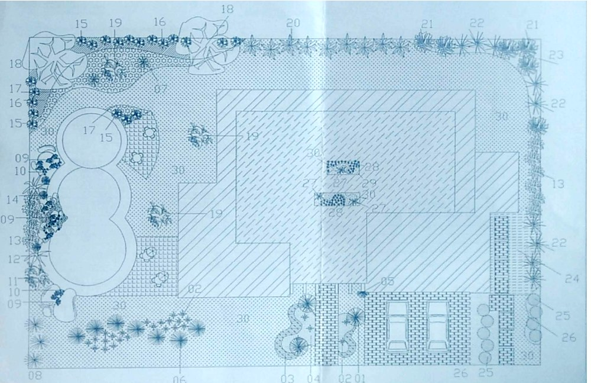
En este plano los grafismos son fáciles de entender: aunque no se usaron siempre círculos iguales, la lectura es clara. Se emplean distintos grafismos para identificar solados, césped, el techo de la casa y las galerías, y se identifican con claridad las líneas que definen el formato de los canteros.
Se optó por no poner cotas en este plano porque sería demasiada información y la lectura sería difícil — eso obliga a elaborar un segundo plano con las medidas y orientaciones, donde a su vez habrá que obviar otra información.
Ojo con el excedente: para obtener mejor efecto visual inicial se puede optar por plantar más plantines de los necesarios para llenar un cantero, y con el tiempo ir retirando las plantas "que sobran" para que las demás crezcan ocupando su espacio real. Es decir: en el presupuesto inicial de implantación hay que calcular más plantines de los que están representados en el plano.
La tabla de especies se lleva al vivero para cotizar (conviene encabezarla con el nombre del vivero y la fecha):
| Código | Cant. | Nombre científico | Nombre común | Altura / maceta | Costo unit. | Costo total |
|---|---|---|---|---|---|---|
| 01 | 03 | Cyca revoluta | Cica | 1,20m | X | 3 × X |
| 02 | 26 | Aechmea fasciata | Bromelia | 0,70m | Y | 26 × Y |
| 03 | 15 plantines/m² | Callisia repens | Calisia | Cubresuelos, macetas M12 | Z | __ × W |
Para los cubresuelos hay que calcular el total de metros cuadrados que ocupan y multiplicarlos por el costo de cada plantín — generalmente se emplean los de maceta M12.
De modo similar se arman la tabla de insumos (insumo, descripción, cantidad, unidad, costo unitario y total — por ejemplo N-P-K 30-30-30 en bolsas de 1kg, o compost en bolsas de 50 litros) y la tabla de materiales extra-vegetales (macetas de barro italianas nº20 por unidad, ladrillos comunes por centenar, durmientes cortados de 0,50m por unidad).
Por qué importa el detalle: para mantener la calidad de un proyecto es fundamental dedicarse a la correcta y detallada elaboración de los costos y presupuestos. Al recibir el flete conviene verificar que los recursos vegetales lleguen en el tamaño y la calidad previstos en el proyecto.
Normalmente no realizamos todos los trabajos de un jardín personalmente: contratamos empresas especializadas para construcción de piscinas, pérgolas y decks, parrillas, albañilería, proyecto e instalación de riego automatizado, de iluminación funcional y decorativa, de obras de drenaje, planimetría y trabajos de agrimensor, e implantación de jardines verticales, huertas, xerojardines, praderas o estanques con peces.
Criterio de contratación: hay que conocer bien a quienes contratamos, porque a la vista del cliente los estamos recomendando. Conviene cotizar con al menos 3 proveedores.
Para la mano de obra y el herramental hay tres caminos: tener herramientas y empleados propios, contratar por obra, o subcontratar toda la ejecución a una empresa con empleados capacitados, supervisores, vehículos, herramientas y máquinas.
Guía de estudio · Módulo VIII
El último tramo: pasar el proyecto del papel a la realidad. Un cronograma de trabajo ordena las operaciones en una secuencia racional, aprovecha mejor el tiempo y deja un proyecto claro para quienes deban ejecutarlo y supervisarlo.
La implantación del paisajismo debe suceder cuando se termine toda la obra y pintura de la casa, quincho, piscina, pérgolas, solados y demás construcciones previstas.
Distintos equipos de trabajo suelen molestarse mutuamente: están en el camino, cada uno necesita espacio para lo suyo, ensucian lo que acabamos de limpiar, compactan el suelo que preparamos, rompen plantas. Y no lo hacen a propósito — necesitan la libertad de moverse y trabajar, y muchas veces no se dan cuenta de lo que sucede alrededor.
Antes de empezar: esperar a que todos se retiren y chequear que hayan llevado sus materiales, escombros y restos de pintura. Eventualmente quedarán elementos que nos pueden servir, como tablones.
El proyecto se divide en tareas y sub-obras que siguen una secuencia lógica. Algunas pueden hacerse en paralelo si el espacio lo permite — no siempre es posible coordinar varios equipos a la vez por limitaciones físicas. La secuencia que suele funcionar bien:
Por qué los mejoradores van al principio: necesitan como mínimo 2 o 3 días de descanso para incorporarse al suelo. Esa ventana se aprovecha para instalar riego e iluminación.
Durante el riego y la iluminación conviene circular sobre tablones, para no compactar el suelo ya preparado y generar menos barro y suciedad en las edificaciones.
Recepción just in time: la entrega debe estar coordinada para que ocurra en el tiempo justo. Lo que llega antes ocupa espacio, dificulta el preparo del área y hay que cuidarlo — las plantas necesitan riego, un espacio de espera adecuado (sombra, sol, protección del viento) y protección para no dañarse.
En el replanteo se ubican árboles, arbustos y masas, y se delimitan canteros con estacas, hilos, mangueras, sogas, sprays atóxicos, arena o banderines. Después se apoyan las plantas en su lugar previsto para verificar espaciamientos y que no falte ni sobre nada.
Si falta poca cantidad se pueden espaciar un poco los plantines; si sobran pocos, juntarlos un poco para aprovechar todos. Entregar un jardín con sobrantes hace sentir al cliente que estamos tirando su dinero — y casi siempre es el resultado de un planeamiento incorrecto.
Se puede regar manualmente con mangueras, pero eso requiere compromiso del propietario: regar lleva tiempo, y el agua debe penetrar en profundidad para estimular que las raíces crezcan hacia abajo y no se formen cabelleras superficiales.
Lo ideal es tener plantas nativas, perfectamente adaptadas a la realidad hídrica, pluviométrica y climática local; en su defecto, exóticas compatibles; o si no, incluir riego automatizado. El automatizado ahorra mucha agua: tiene un costo inicial elevado pero se paga con el tiempo.
En lugares con mucha escasez de agua, como California, está prohibido plantar césped en proyectos nuevos, hay incentivos fiscales para reemplazar zonas de césped por otras soluciones, y el riego es obligatorio cuando las especies tienen requerimientos incompatibles con el régimen pluviométrico local.
El riego se diseña considerando el proyecto de paisajismo, la ubicación de cada especie y su requerimiento hídrico, y el tamaño y diseño de los canteros. No hay que derrochar agua mojando caminos y paredes — no van a crecer, y encima dificulta la circulación. Para eso existen aspersores con ángulos regulables, goteros y mangueras perforadas bajo tierra.
Variables a definir:
Orden correcto: el riego se instala antes de plantar, respetando el plano de plantación — no queremos cañerías justo donde abriremos pozos y zanjas. Instalarlo antes evita el sufrimiento de las plantas, el trabajo duplicado de rehacer zanjas, suciedad y demoras. Se prueba la instalación sin encharcar, o se espera el secado del suelo antes de plantar; esos tiempos van en el cronograma. La programación se testea al finalizar la plantación, aprovechando para hacer un primer riego en profundidad.
Para contratar el proyecto hay que entregar al profesional el plano de plantación con tabla de especies, para que dimensione la toma de agua, la bomba presurizadora, los diámetros de cañería, los tipos de aspersores y goteros, el sensor de lluvia, las válvulas de sectorización y el controlador.
Más allá de permitir circular de noche viendo dónde pisamos, usar los espacios exteriores sin luz natural y evitar que se esconda gente indeseada, el proyecto de iluminación busca lograr efectos artísticos y resaltar puntos focales y plantas, ambientando el jardín para el disfrute nocturno.
Un jardín sin adecuada iluminación desaparece por la noche, achicando la casa. Parecería que la casa termina en la ventana.
Son muchos los artefactos a considerar —plafones, reflectores, tipos de lámpara, colores, intensidades, resistencia a lluvia y riego, fijaciones, calidad de cableado, enchufes, cajas de control, sectorización, circuitos, llaves térmicas— por lo que lo indicado es contratar a un profesional especializado en iluminación de exteriores.
Secuencia: conviene preparar la iluminación después del riego. A veces se hacen ambos en paralelo aprovechando las zanjas, pero con instalaciones adecuadamente aisladas una de otra. Se coloca el cableado, las conexiones, las llaves y los enchufes, y se deja la colocación de los artefactos en sí —reflectores, plafones— para el final, después de la plantación: son delicados (un golpe los rompe de forma irreparable) y caros.
Se trabaja de mayor a menor — recordando que las plantas más altas van atrás en los canteros o contra las paredes, les siguen las de mediana altura y se termina con las más bajas. El orden es: árboles → arbustos → herbáceas → cubresuelos → césped.
Empezamos por los árboles porque:
Siguen los arbustos, que a veces son igual de grandes o más voluminosos que los árboles, pero al ser multipodales no sufren tanto ante una rotura o desgarro. Si van plantados delante de árboles hay que planear que su tamaño no los tape visualmente.
Luego las herbáceas (primero las macetas más grandes), después los cubresuelos no pisoteables, las terminaciones de canteros y borduras, y al final el césped.
Las macetas pueden plantarse en cualquier etapa del trabajo, siempre que no queden en el camino y puedan moverse después a su lugar definitivo.
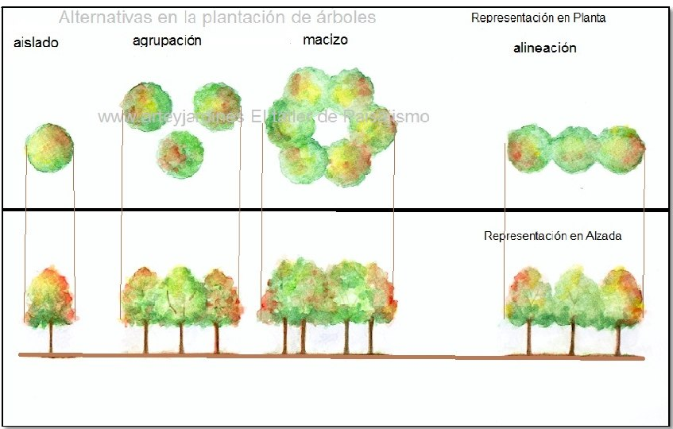
El cronograma general ordena las tres grandes fases con sus fechas:
| Fase | Tareas | Fechas del ejemplo |
|---|---|---|
| Preliminares | Limpieza · Desterronado · Nivelación · Fertilización | 20/03 al 23/03 |
| Plantación | Árboles · Arbustos · Herbáceas y cubresuelos · Césped | 01/04 al 06/04 |
| Posteriores | Entrega · Seguimiento | 08/04 y 27/05 |
El cronograma detallado agrega, por tarea: inicio, final, tiempo en horas, mano de obra (cantidad de peones y supervisores), costo y herramientas o máquinas necesarias. Por ejemplo, la limpieza son 8h con 6 peones y 1 supervisor, usando carretillas, palas y motoguadaña; la plantación y riego son 44h con 5 peones y 1 supervisor.
Tres detalles del ejemplo que vale copiar: cuantificar peones y supervisores facilita presupuestar y contratar; cuando una tarea libera peones, se los puede trasladar a otra obra o tarea en paralelo; y la entrega se programa un lunes, con luz de día y sin apuro.
Tan importante como los cronogramas de obra es el cronograma de recepción de pedidos, con pedido, cantidad, proveedor, fecha del pedido y fecha de entrega — incluso con horario, como "01/04 8am" para las plantas y "01/04 13h" para los tutores.
La visita de seguimiento ocurre normalmente entre los 30 y 60 días de la entrega y debe ser parte del presupuesto de ejecución. Desde ese momento empieza la etapa de mantenimiento periódico, si el cliente decide contratar ese servicio.
Los pozos o zanjas para plantación deben tener, como mínimo, el doble del tamaño del terrón tanto en ancho como en profundidad. Cuanto más grande el espacio con sustrato bueno y aireado, más fácilmente agarrarán las plantas.
Cuadrado vs. cilíndrico: si el pozo es cuadrado, las raíces al encontrarse con una pared perpendicular tienden a perforarla y buscar más extensión. Si es cilíndrico, tienden a hacer la curva y comportarse como si estuvieran en una maceta — lo que en algún momento frenará su crecimiento.
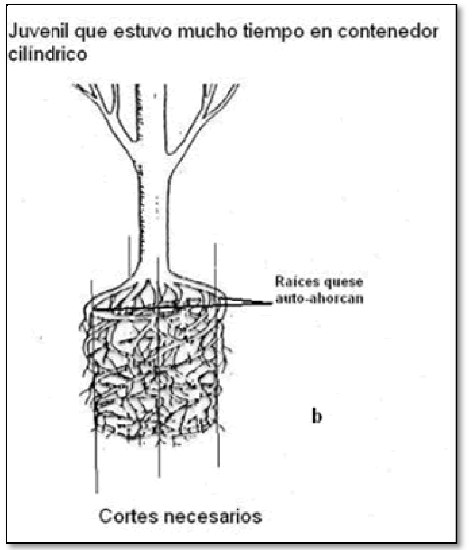
Para el rellenado:
El tutoramiento cumple más de una función y puede realizarse por distintos métodos:
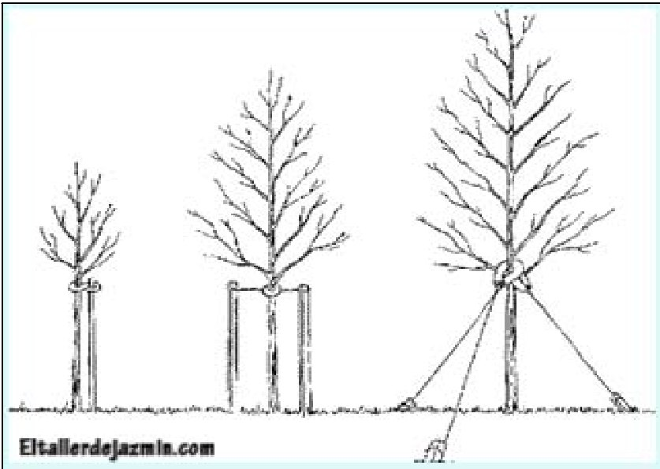
Corrección al esquema: en la figura de la derecha conviene clavar las estacas en dirección contraria a la ilustrada, para que no sean arrancadas por esos mismos cables cuando haya viento y reciban tirones — de la misma manera como se clavarían las estacas de una carpa de camping.
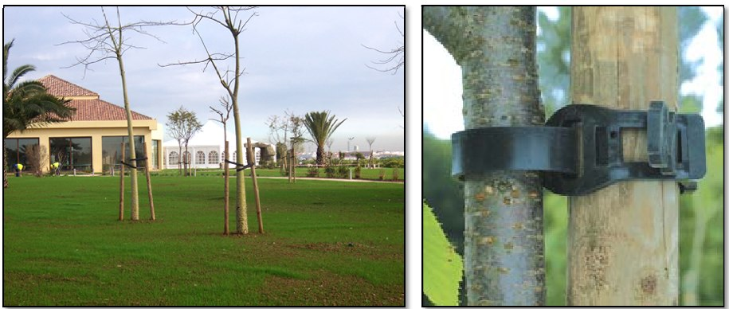
Es recomendable proteger el cuello de los árboles jóvenes con botellas PET cortadas, para evitar daños con bordeadoras.
El césped se hace al último porque no conviene el pisoteo por un mínimo de 15 días luego de instalado (y necesita 2 a 3 semanas sin uso para enraizar correctamente).
¡Mojar no es regar! Regar es proporcionar a la planta la cantidad necesaria de agua para su desarrollo, ni más ni menos.
Muchas veces creemos haber regado cuando en realidad apenas mojamos la porción más superficial de la tierra. Podemos comprobarlo clavando una estaca seca para verificar hasta qué profundidad llegó el agua. Regar en profundidad estimula que las raíces crezcan hacia abajo, dando más estabilidad y autonomía — lo que después permitirá retirar los tutores.
El primer riego después de la plantación debe ser profundo: así eliminamos aire, asentamos tierra, podemos hacer correcciones y proveemos a la planta de lo necesario para adaptarse y enraizar. Luego el cliente debe comprometerse a mantener el equilibrio de las reservas hídricas, manteniendo el sustrato suficientemente húmedo.
Práctica de obra: mientras estamos en obra, las plantas en tierra y las que aún estén en macetas se riegan al finalizar el día de trabajo — así evitamos la formación de barro que dificulta el trabajo. Pero si el día es muy caluroso y seco y las plantas lo requieren, se riega antes, evitando que lleguen al estrés hídrico y sufran deshidratación.
Los esquemas de plantación deben estar especificados en el plano de plantación y detallados en un documento que lo acompañe.
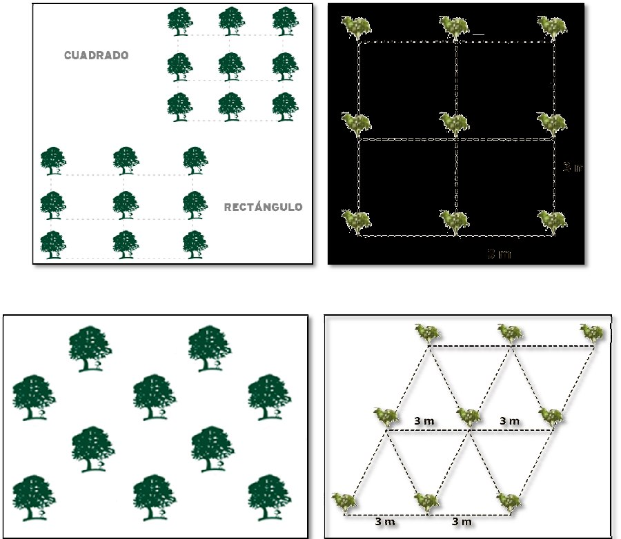
La plantación en tresbolillo ubica cada planta en el vértice de triángulos equiláteros —en el ejemplo, de 3m de lado— de modo que cada una queda en el centro del espacio que dejan las de la fila anterior. Aprovecha mejor la superficie que la plantación en cuadrado.
Cuando terminamos el trabajo, retiramos todas las herramientas y el jardín está regado, podemos entregarlo. Si el día está avanzado conviene dejarlo para el día siguiente o dentro de dos o tres días — así de paso verificamos que siga todo en orden.
La entrega se hace recorriendo el jardín con el cliente, e idealmente deben estar presentes el diseñador (que sabe explicar los detalles artísticos y ornamentales) y el director de obra (responsable por los aspectos técnicos). Durante el recorrido:
Es como la entrega de la llave de un cero kilómetro con su manual del usuario.
Como parte de la entrega se coordina una visita de seguimiento a los 30 a 60 días. Sirve para verificar que las plantas estén enraizando bien, que el riego esté bien regulado y que los tutores sigan firmes, y permite coordinar algún trabajo necesario — como el rejunte de panes de césped con una cobertura de compost.
Después se puede ofrecer el servicio de mantenimiento periódico: semanal, quincenal, mensual o estacional, según las características del jardín, las tareas que el cliente desee hacer personalmente y su capacidad financiera.
Cierre del curso: «Esperamos que este curso les haya servido y que les deje con ganas de seguir investigando y estudiando, y que además se vea reflejado en sus jardines. ¡Gracias por la atención!» — Elena Soboleff